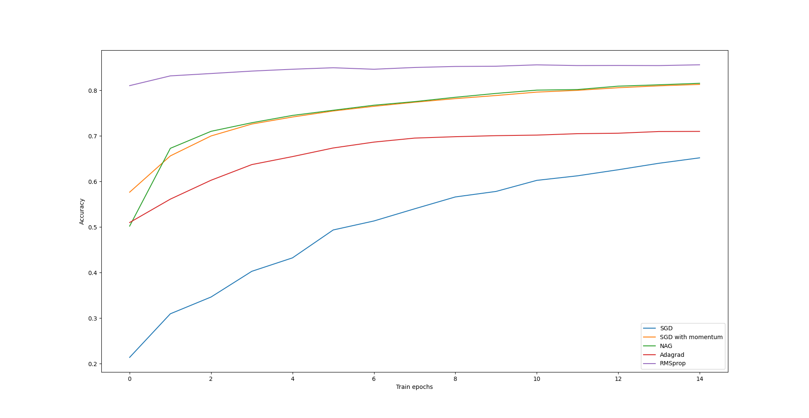

Optimizers
By default, neural-classifier:train-epoch uses stochastic gradient descent
(SGD) algorithm to minimize the cost function. There are other optimizers
which can be used during learning. You can create an optimizer by
instantiating of of the optimizer classes (which are subclasses of
neural-classifier:optimizer) and pass it to
neural-classifier:train-epoch function. A complete list of optimizers is
below. A symbol \(f\) present in the documentation denotes the cost
function. A learning rate is specified using :η initarg. Initargs :β1
and :β2 are common for optimizers with momentum and variable learning
rate respectively.
optimizer| Superclasses | (t) |
| Metaclass | standard-class |
| Default Initargs | nil |
learning-rateParameter which controls learning speed of the neural network. Must be a small positive value.Allocation instance Type single-floatInitarg :ηReaders (optimizer-learning-rate)minibatch-sizeNumber of samples in a minibatch. An integer in the range 10-100 is good for this parameter.Allocation instance Type alexandria:positive-fixnumInitarg :minibatch-sizeInitform 40Readers (optimizer-minibatch-size)decay-rateA parameter used for L² regularization. 0.0 is no regularization. Good values are 1-10 divided by the dataset size.Allocation instance Type single-floatInitarg :decay-rateInitform 0.0Readers (optimizer-decay-rate)
sgd-optimizer| Superclasses | (optimizer t) |
| Metaclass | standard-class |
| Default Initargs | (:η 0.01) |
momentum-optimizer| Superclasses | (momentum-memo-optimizer t) |
| Metaclass | standard-class |
| Default Initargs | (:η 0.01 :β1 0.9) |
Stochastic gradient descent optimizer with momentum. A parameter \(w\) of a neural network is updated with respect to an accumulated momentum \(m\):
\(m_{n+1} = \beta_1 m_{n} + \eta \nabla f(w_n)\)
\(w_{n+1} = w_n - m_{n+1}\)
nesterov-optimizer| Superclasses | (momentum-memo-optimizer t) |
| Metaclass | standard-class |
| Default Initargs | (:η 0.01 :β1 0.9) |
Nesterov optimizer: a stochastic gradient descent with momentum and 'look-ahead'. A parameter \(w\) of a neural network is updated with respect to an accumulated momentum \(m\):
\(m_{n+1} = \beta_1 m_{n} + \eta \nabla f(w_n - \beta_1 m_n)\)
\(w_{n+1} = w_n - m_{n+1}\)
adagrad-optimizer| Superclasses | (rate-memo-optimizer t) |
| Metaclass | standard-class |
| Default Initargs | (:η 0.01) |
Adagrad optimizer: an optimizer with decaying learning rate. A parameter \(w\) of a neural network is updated as follows:
\(s_{n+1} = s_n + (\nabla f(w_n))^2\)
\(w_{n+1} = w_n - \frac{\eta}{\sqrt{s_{n+1} + \epsilon}} \nabla f(w_n)\)
rmsprop-optimizer| Superclasses | (rate-memo-optimizer t) |
| Metaclass | standard-class |
| Default Initargs | (:η 0.001 :β2 0.99) |
RMSprop optimizer: an optimizer with adaptive learning rate. A parameter \(w\) of a neural network is updated as follows:
\(s_{n+1} = \beta_2 s_n + (1 - \beta_2)(\nabla f(w_n))^2\)
\(w_{n+1} = w_n - \frac{\eta}{\sqrt{s_{n+1} + \epsilon}} \nabla f(w_n)\)
adam-optimizer| Superclasses | (momentum-memo-optimizer rate-memo-optimizer t) |
| Metaclass | standard-class |
| Default Initargs | (:η 0.001 :β1 0.9 :β2 0.999) |
ADAM optimizer: an optimizer with adaptive learning rate and momentum. A parameter \(w\) of a neural network is updated as follows:
\(m_{n+1} = \beta_1 m_n + (1 - \beta_1) \nabla f(w_n)\)
\(s_{n+1} = \beta_2 s_n + (1 - \beta_2)(\nabla f(w_n))^2\)
\(\hat{m} = m_{n+1} / (1 - \beta_1^n) \)
\(\hat{s} = s_{n+1} / (1 - \beta_2^n) \)
\(w_{n+1} = w_n - \frac{\eta}{\sqrt{\hat{s} + \epsilon}} \hat{m}\)
corrected-momentum-coeffCorrected \(\beta_1\) parameterAllocation instance Type single-floatInitform 1.0Accessors (optimizer-corrected-momentum-coeff)corrected-rate-coeffCorrected \(\beta_2\) parameterAllocation instance Type single-floatInitform 1.0Accessors (optimizer-corrected-rate-coeff)
Here is a plot showing how accuracy of classification of test data from fashion MNIST set varies with the number of training epochs. Networks used in this example have one hidden layer with 50 neurons. All activation functions are sigmoids. Accuracy are averaged from 3 independent runs. 